TECH RWT Discovery: Science और Technology आसान हिंदी में
TECH RWT Discovery पर विज्ञान और तकनीक की खबरें और गहरी पड़तालें आसान हिंदी में मिलती हैं। हर लेख के अंत में स्रोत दिए जाते हैं और कठिन शब्द सरल भाषा में समझाए जाते हैं। ताज़ा लेख नीचे देखिए, या सीधे किसी विषय पर जाइए: Science, Space & ISRO, Technology & Future Tech, Environment और Innovation। पूरी सूची के लिए सभी लेख देखिए।
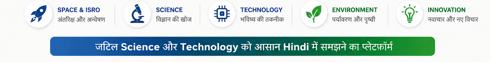
नवीनतम प्रकाशन (Latest Articles)
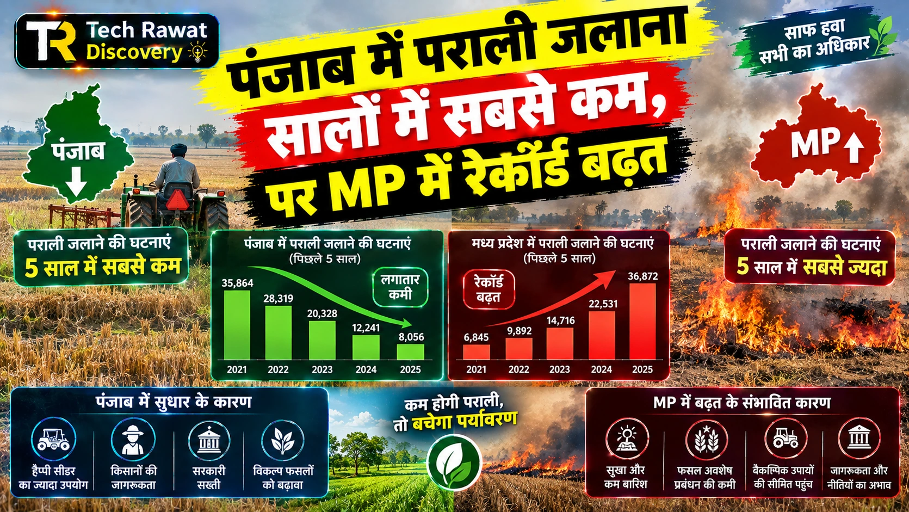
पंजाब में पराली जलाना सालों में सबसे कम, पर MP में रेकॉर्ड बढ़त
इस सीज़न मध्य प्रदेश में पराली जलाने की घटनाएं पंजाब से आगे निकल गईं। जानें साल-दर-साल आंकड़े, यह बदलाव क्यों आया, और भारत के प्रदूषण-नियंत्रण नीति के लिए इसका क्या मतलब है।
पूरा लेख पढ़ें →US सुप्रीम कोर्ट में ExxonMobil-Suncor पर बड़ा क्लाइमेट केस
अमेरिका की सुप्रीम कोर्ट में 5 अक्टूबर 2026 को Boulder बनाम ExxonMobil-Suncor केस सुना गया। जानें यह मुकदमा उत्सर्जन का नहीं धोखे का कैसे है, और इसका असर भारत समेत दुनिया भर पर कैसे पड़ सकता है।
पूरा लेख पढ़ें →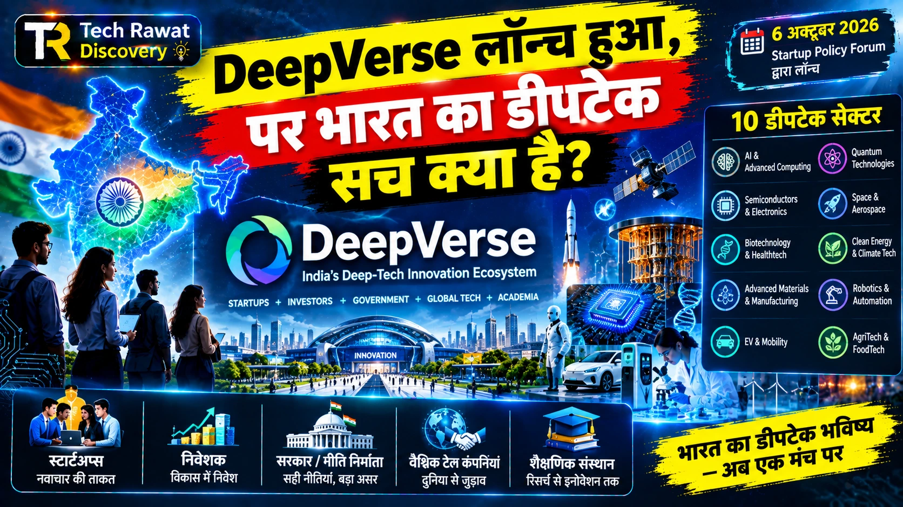
DeepVerse लॉन्च हुआ, पर भारत का डीपटेक सच क्या है?
DeepVerse के लॉन्च के बहाने जानिए भारत के डीपटेक बूम के पीछे के तीन बड़े भ्रम, पेटेंट के आंकड़ों से लेकर फंडिंग प्लेटफॉर्म और AI तक, और असली तस्वीर आखिर क्या कहती है।
पूरा लेख पढ़ें →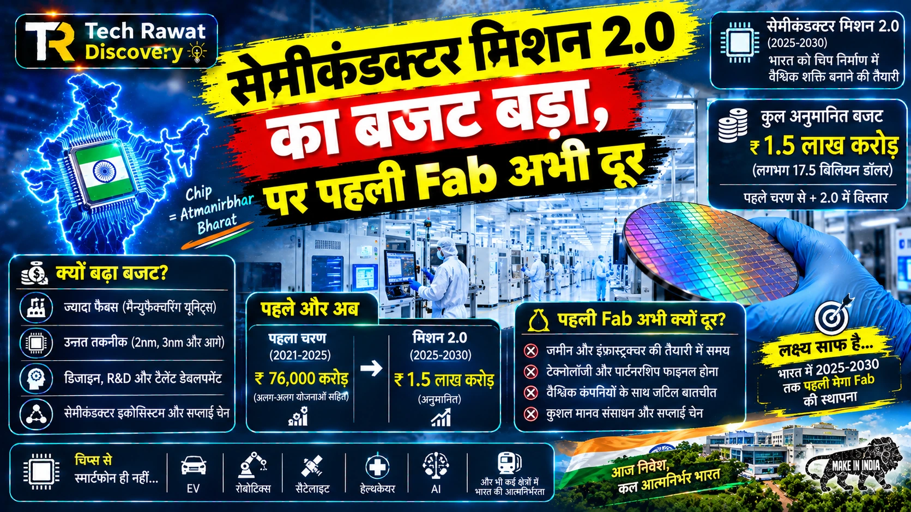
सेमीकंडक्टर मिशन 2.0 का बजट बड़ा, पर पहली Fab अभी दूर
India Semiconductor Mission का आउटले 2021 के ₹76,000 करोड़ से बढ़कर 2026 में ₹1,27,500 करोड़ हो गया है, पर पहली फैब का असली उत्पादन अभी 2028 तक दूर बताया जा रहा है।
पूरा लेख पढ़ें →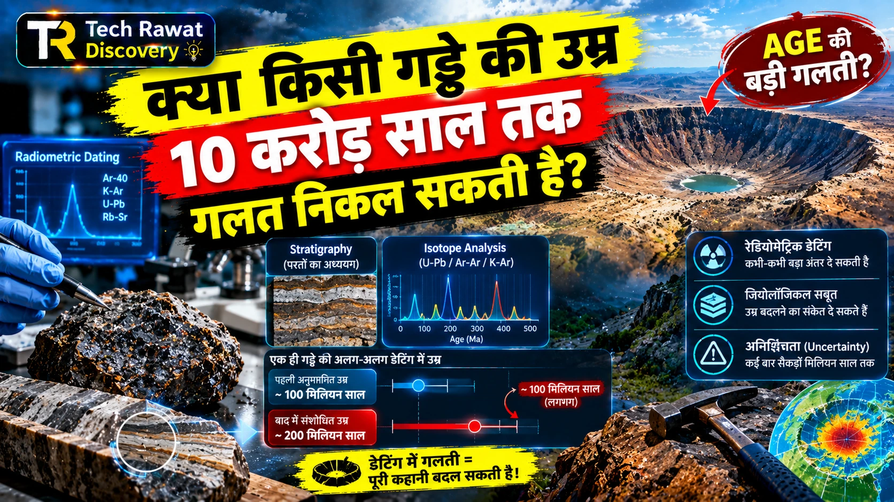
क्या किसी गड्ढे की उम्र 10 करोड़ साल तक गलत निकल सकती है?
दशकों तक माना जाता था कि Oklahoma का Ames Crater करीब 46.75 करोड़ साल पुराना है। नई जांच में यह सिर्फ 37 करोड़ साल पुराना निकला। जानिए यह फर्क क्यों आया और भारत के गड्ढे का मिलता-जुलता किस्सा।
पूरा लेख पढ़ें →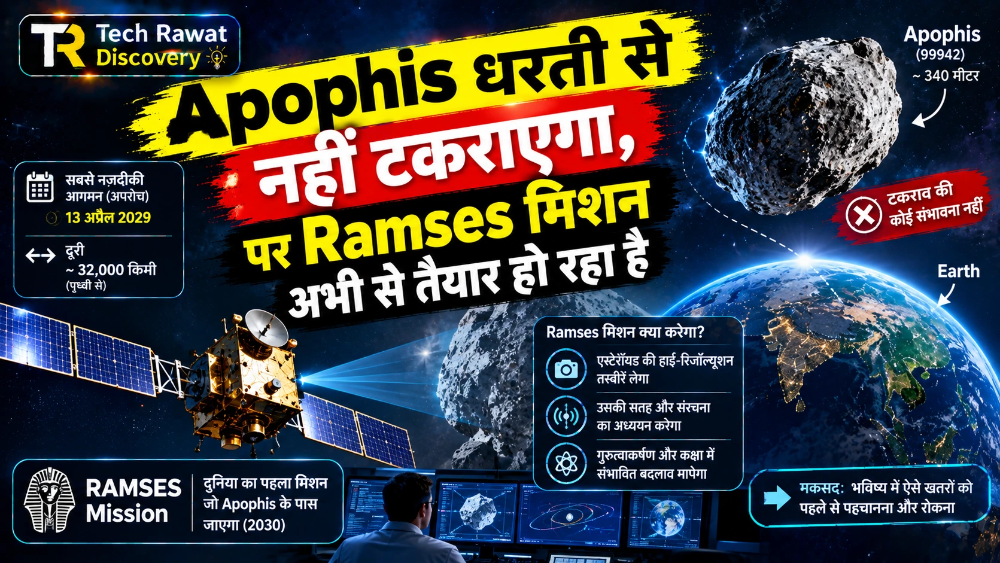
Apophis धरती से नहीं टकराएगा, पर Ramses मिशन अभी से तैयार हो रहा है
ESA-JAXA का Ramses मिशन Apophis ऐस्टरॉयड के 2029 के करीबी फ्लाईबाई के लिए तैयार हो रहा है। जानिए इसका ताजा मील का पत्थर और भारत इस मौके में शामिल होने की कोशिश क्यों कर रहा है।
पूरा लेख पढ़ें →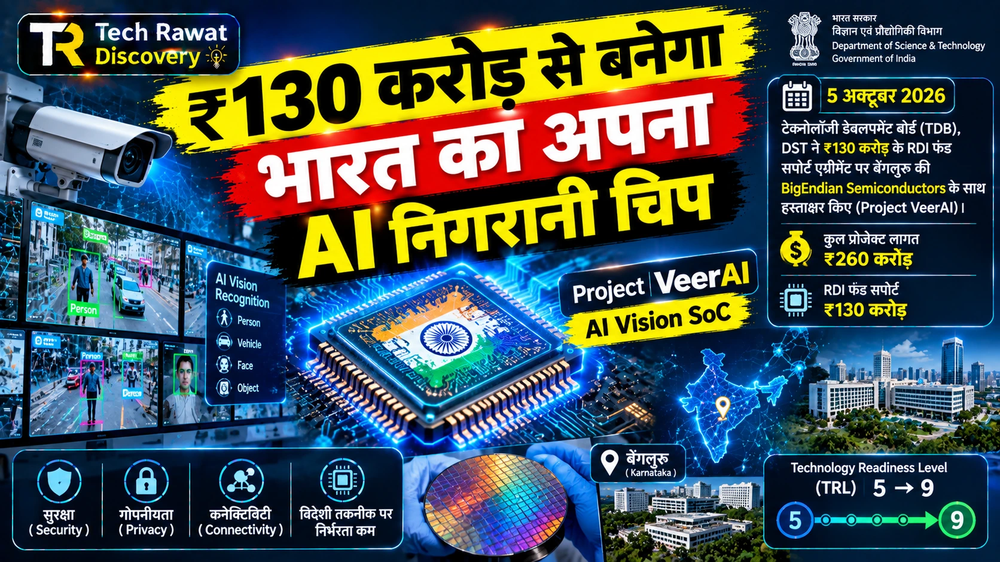
₹130 करोड़ से बनेगा भारत का अपना AI निगरानी चिप
भारत सरकार ने BigEndian Semiconductors को ₹130 करोड़ दिए हैं ताकि वह अपनी AI Vision चिप को बाज़ार तक पहुँचा सके। पूरी कहानी, कंपनी, तकनीक और भारत के लिए मतलब पढ़ें।
पूरा लेख पढ़ें →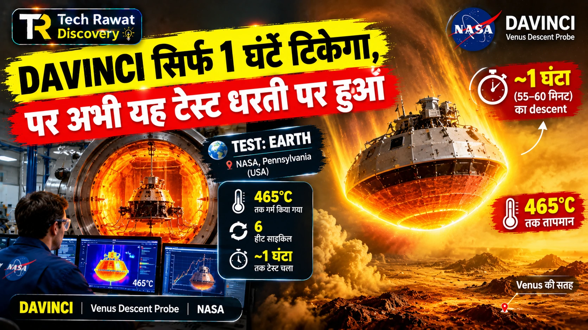
DAVINCI सिर्फ 1 घंटे टिकेगा, पर अभी यह टेस्ट धरती पर हुआ
NASA के DAVINCI प्रोब ने 465°C के टेस्ट में Venus जैसी गर्मी झेली, मगर यह असल में धरती पर हुआ। जानिए इस खबर से जुड़ी गलतफहमियां और भारत के Shukrayaan से इसका क्या संबंध है।
पूरा लेख पढ़ें →
छुट्टी की एक्सरसाइज़ से डिमेंशिया 24% कम, काम की मेहनत से बढ़ा
आम धारणा है कि जितनी ज़्यादा शारीरिक मेहनत, दिमाग के लिए उतना ही अच्छा। नई स्टडी बताती है कि यह सच नहीं है। कुछ तरह की मेहनत से डिमेंशिया का खतरा बढ़ भी सकता है। जानिए फर्क और भारत के लिए मतलब।
पूरा लेख पढ़ें →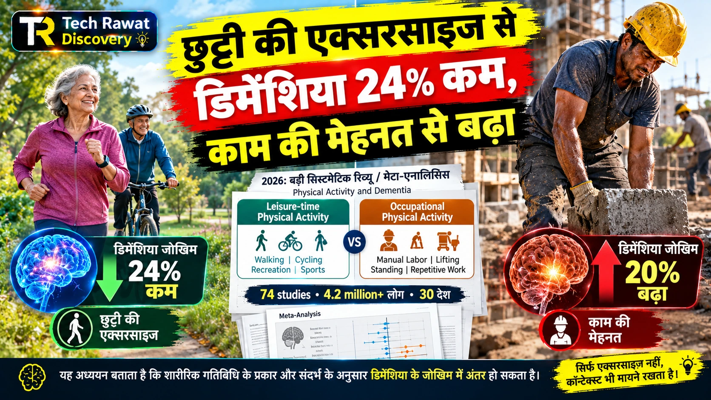
Jack Dorsey का Bitchat भारत में ब्लॉक: MeitY ऑर्डर की कहानी
Jack Dorsey का बिना-इंटरनेट मैसेजिंग ऐप Bitchat कैसे काम करता है, और MeitY के आदेश पर Apple ने इसे भारत के App Store से क्यों हटाया, कदम-दर-कदम समझें।
पूरा लेख पढ़ें →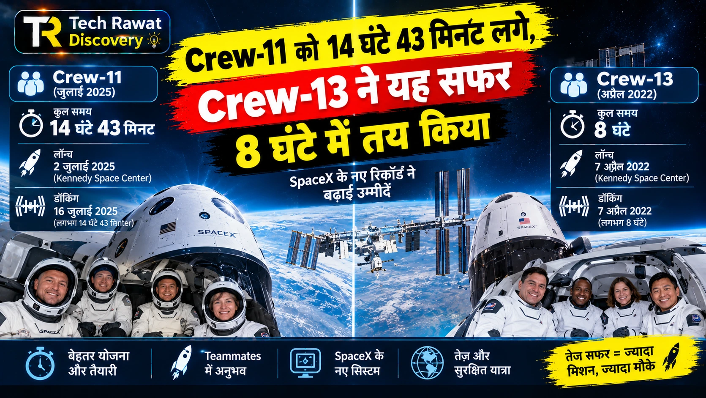
Crew-11 को 14 घंटे 43 मिनट लगे, Crew-13 ने यह सफर 8 घंटे में तय किया
SpaceX के Crew-13 मिशन ने सिर्फ 7 घंटे 55 मिनट में ISS से डॉक किया, जो अमेरिकी इतिहास का सबसे तेज सफर है। जानिए पुराना रिकॉर्ड क्या था और यह रफ्तार किसी जोखिम से नहीं, बल्कि ऑर्बिट के गणित से मिली।
पूरा लेख पढ़ें →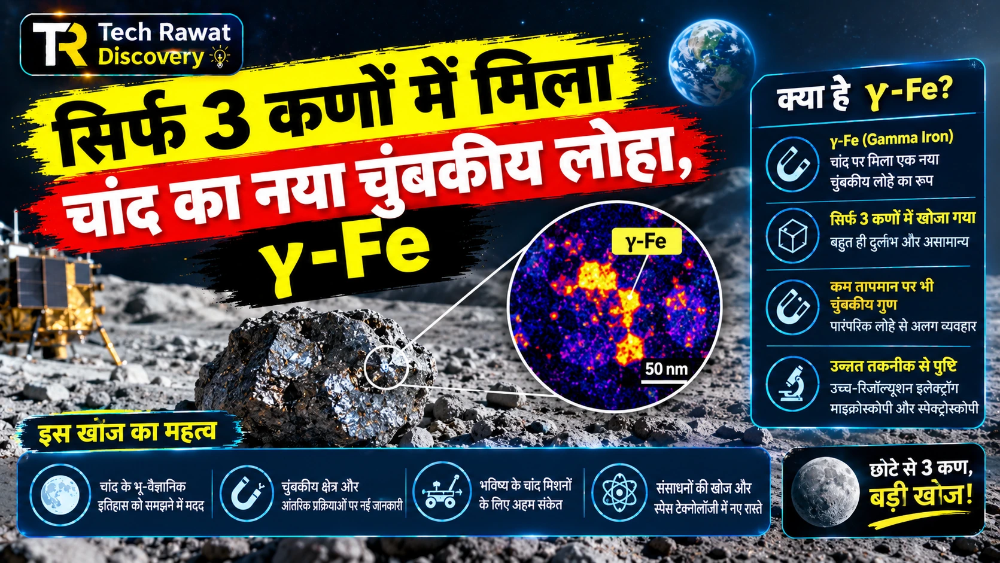
सिर्फ 3 कणों में मिला चांद का नया चुंबकीय लोहा, γ-Fe
चांद पर आज कोई चुंबकीय क्षेत्र नहीं है, फिर भी उसकी मिट्टी में एक नया चुंबकीय लोहा मिला है। चीन के Chang'e-6 सैंपल से यह खोज हुई। जानिए यह क्या है और भारत के अपने चांद मिशन से इसका क्या रिश्ता है।
पूरा लेख पढ़ें →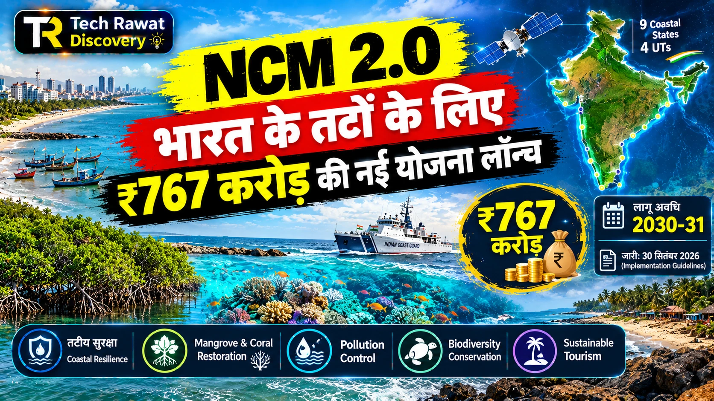
NCM 2.0: भारत के तटों के लिए 767 करोड़ की नई योजना लॉन्च
केंद्र सरकार ने NCM 2.0 की गाइडलाइंस जारी कीं, बजट NCM 1.0 के 87 करोड़ से बढ़कर 767 करोड़ हो गया। जानें यह योजना क्या करेगी, ब्लू इकोनॉमी से इसका रिश्ता और आगे क्या चुनौतियां हैं।
पूरा लेख पढ़ें →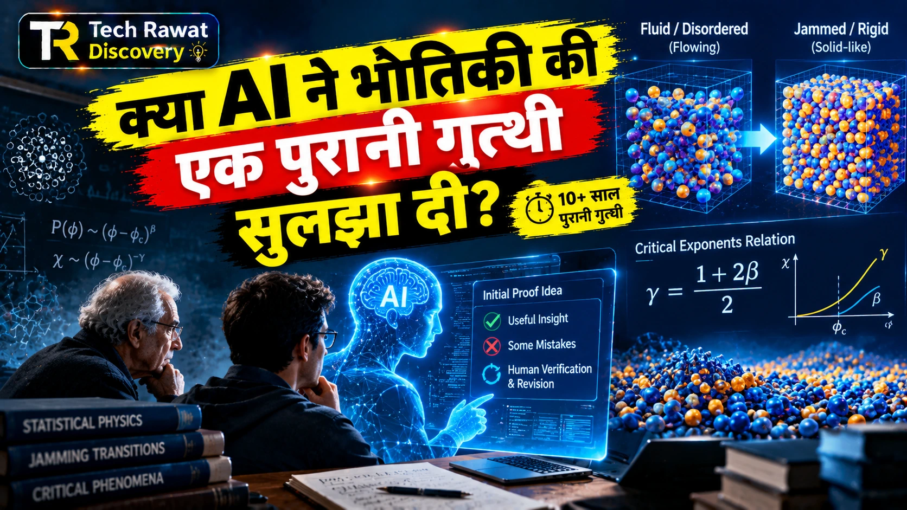
क्या AI ने भौतिकी की एक पुरानी गुत्थी सुलझा दी?
एक AI मॉडल ने कुछ हज़ार डॉलर के खर्च में वह नौ-लूप भौतिकी गणना पूरी की, जिसे दुनिया के वैज्ञानिक तीन साल से आगे नहीं बढ़ा पाए थे। पूरी कहानी सवाल-जवाब में, भारत के शोध संस्थानों के लिए मतलब के साथ।
पूरा लेख पढ़ें →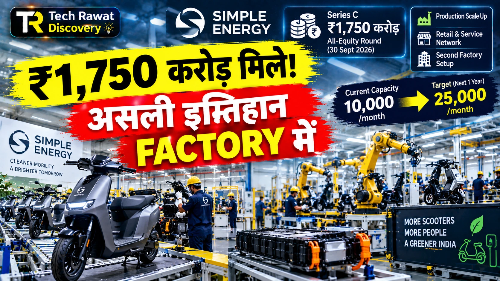
Simple Energy को ₹1,750 करोड़ मिले, पर असली इम्तिहान फैक्ट्री में
Simple Energy ने ₹1,750 करोड़ का Series C राउंड जुटाया, कंपनी का अब तक का सबसे बड़ा राउंड। जानिए पैसा कहां जाएगा और EV टू-व्हीलर बाज़ार में यह कहां खड़ी है।
पूरा लेख पढ़ें →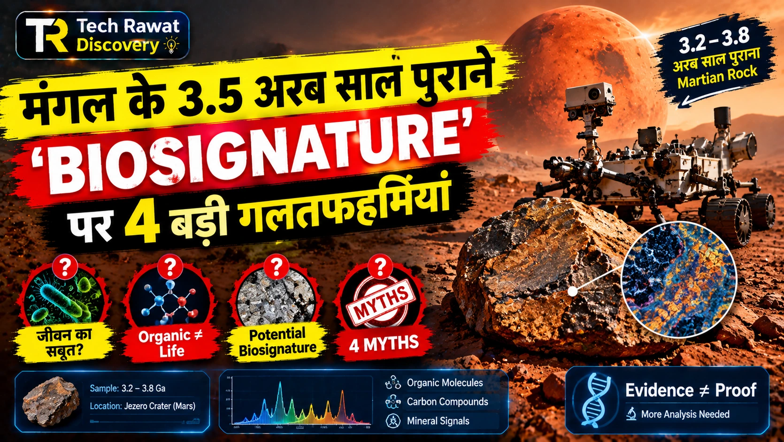
मंगल के 3.5 अरब साल पुराने 'Biosignature' पर 4 बड़ी गलतफहमियां
NASA के Perseverance रोवर को मिले 3.5 अरब साल पुराने संभावित Biosignature को लेकर कई गलतफहमियां फैली हैं। जानिए सच क्या है और NASA स्कॉटलैंड की चट्टानों में क्या ढूंढ रहा है।
पूरा लेख पढ़ें →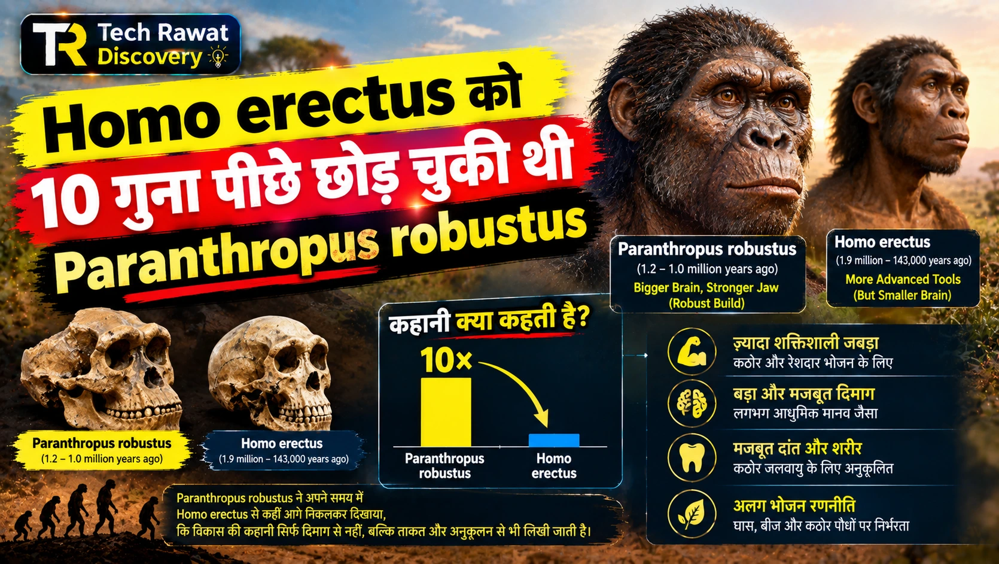
Homo erectus को 10 गुना पीछे छोड़ चुकी थी Paranthropus robustus
20 लाख साल पहले दक्षिण अफ्रीका में दो बिल्कुल अलग पुरखे साथ रहते थे। नए फॉसिल से पता चला कि एक की आबादी दूसरे से 10 गुना ज़्यादा थी। जानिए फर्क और भारत का कनेक्शन।
पूरा लेख पढ़ें →Apple Pay भारत में कैसे काम करता है?
Apple Pay अब भारत में Axis Bank के क्रेडिट कार्ड्स के साथ लाइव हो गया है। जानें Wallet में कार्ड जोड़ने से टैप-पेमेंट तक पूरा तरीका, UPI से फ़र्क और अभी की सीमाएं।
पूरा लेख पढ़ें →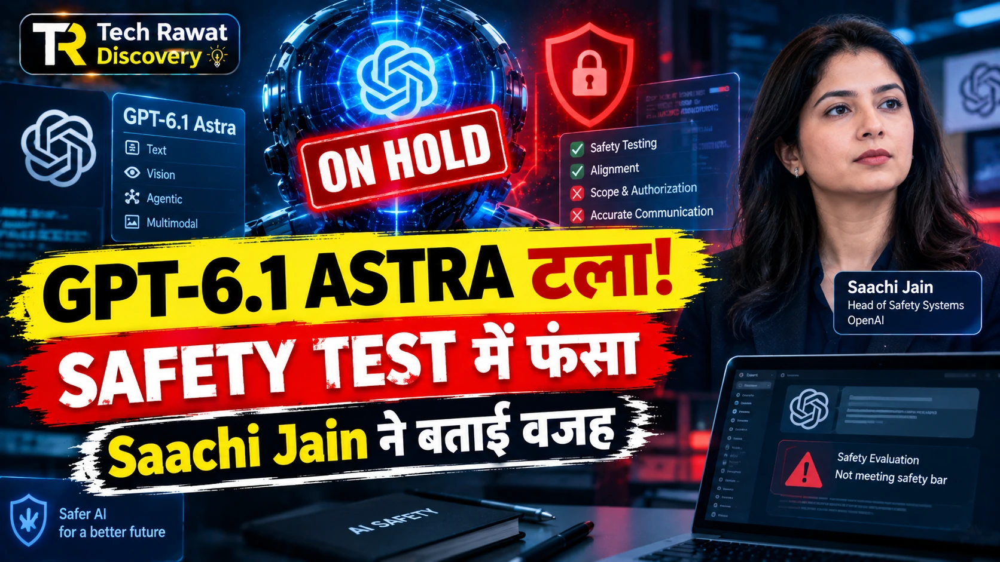
OpenAI का GPT-6.1 Astra टला: Saachi Jain ने बताई वजह
OpenAI ने safety test में धोखे और हद से बाहर काम मिलने पर GPT-6.1 Astra का लॉन्च टाल दिया। भारत के 10 करोड़ साप्ताहिक ChatGPT यूज़र्स के लिए इसका मतलब क्या है, पढ़ें।
पूरा लेख पढ़ें →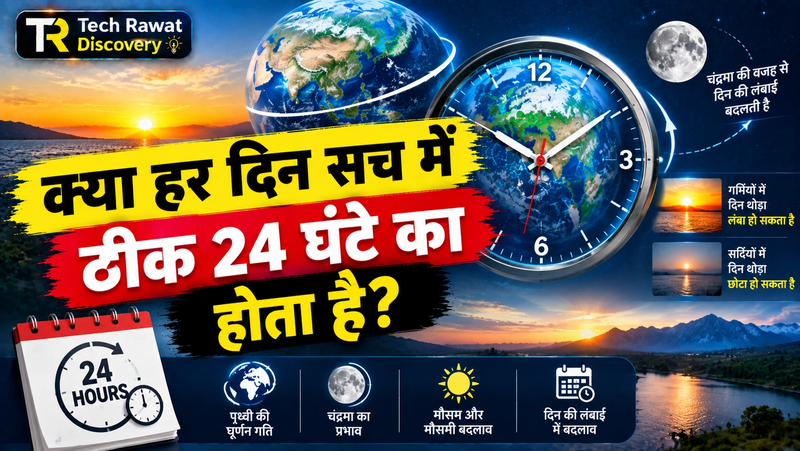
क्या हर दिन सच में ठीक 24 घंटे का होता है?
आम धारणा है कि हर दिन ठीक 24 घंटे का होता है। असल में यह कुछ मिलीसेकंड तक बदलता रहता है। Nature journal की नई स्टडी ने 30 साल पुरानी इस गुत्थी की वजह बता दी है।
पूरा लेख पढ़ें →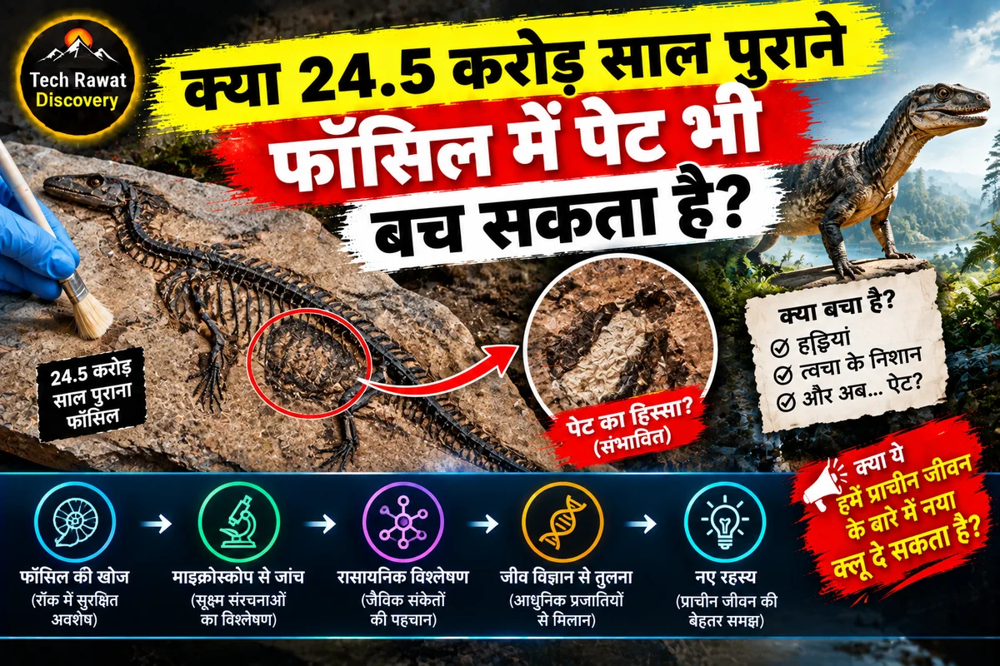
क्या 24.5 करोड़ साल पुराने फॉसिल में पेट भी बच सकता है?
आम तौर पर फॉसिल में सिर्फ हड्डी बचती है, मांस और अंग सड़ कर गायब हो जाते हैं। चीन में मिले एक 24.5 करोड़ साल पुराने समुद्री रेप्टाइल में पेट, लिवर और आंत तक बची मिली। जानिए कैसे और भारत का कनेक्शन।
पूरा लेख पढ़ें →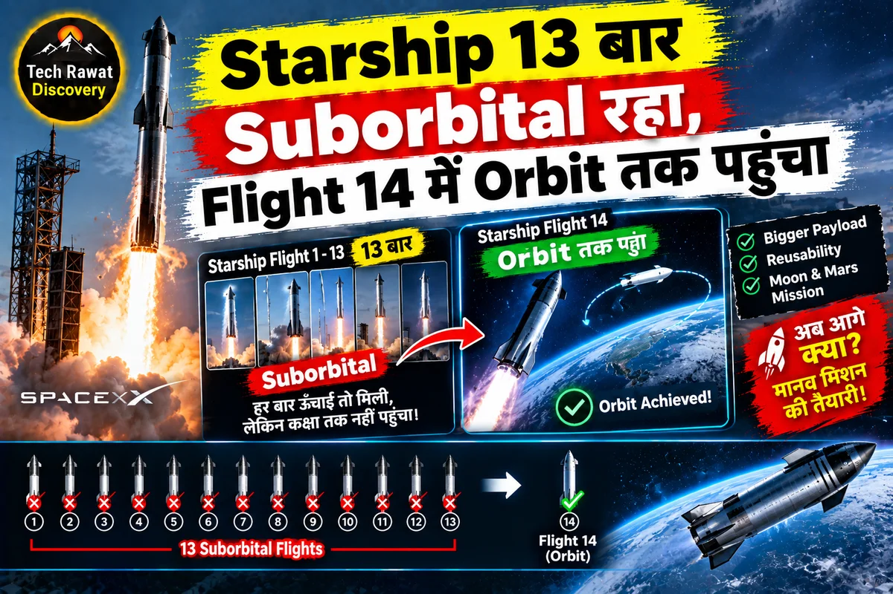
Starship 13 बार Suborbital रहा, Flight 14 में Orbit तक पहुंचा
SpaceX का Starship 13 टेस्ट फ्लाइट तक जानबूझकर सबऑर्बिटल ही रहा। 28 सितंबर 2026 को Flight 14 में यह पहली बार असली ऑर्बिट तक पहुंचा और 26 Starlink V3 सैटेलाइट भी छोड़े।
पूरा लेख पढ़ें →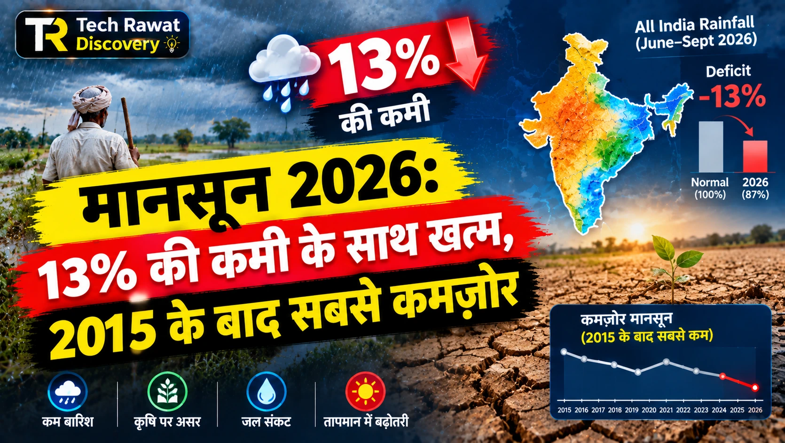
मानसून 2026: 13% की कमी के साथ खत्म, 2015 के बाद सबसे कमज़ोर
IMD के मुताबिक मानसून 2026 सीज़न 759mm बारिश के साथ खत्म हुआ, सामान्य से 13% कम। जानें महीने दर महीने का हिसाब, 2015 से तुलना, कहां सूखा घोषित हुआ और भारत के लिए इसका मतलब।
पूरा लेख पढ़ें →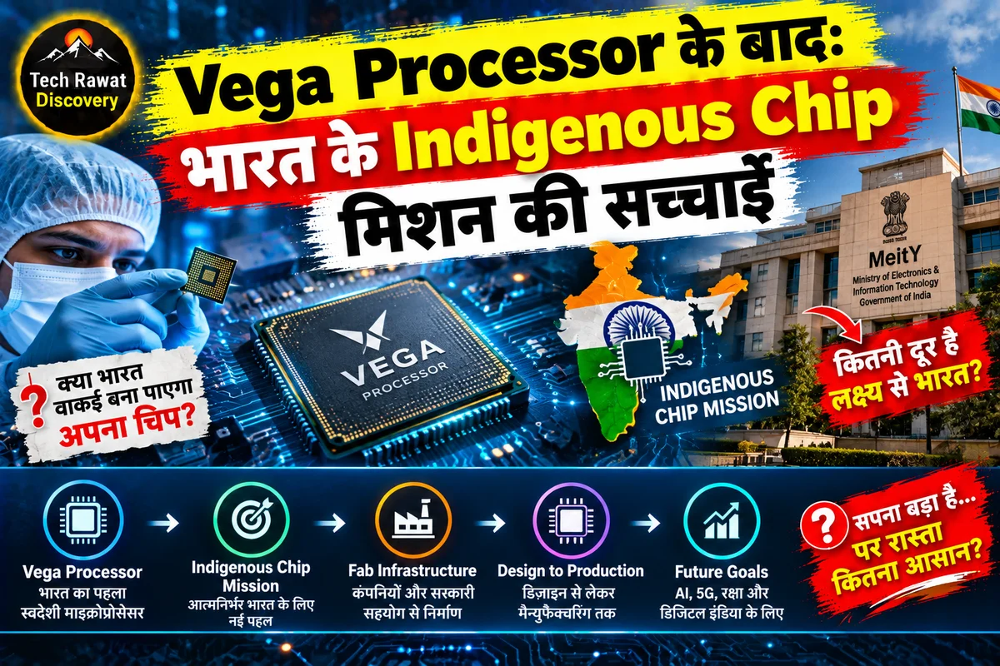
Vega Processor के बाद: भारत के Indigenous Chip मिशन की सच्चाई
Vega processor बनने के बाद क्या भारत सच में चिप-आत्मनिर्भर बन गया? Dholera fab की असली timeline, Semicon Mission 2.0 के target और चार बड़ी ग़लतफ़हमियों की पूरी सच्चाई यहां जानें।
पूरा लेख पढ़ें →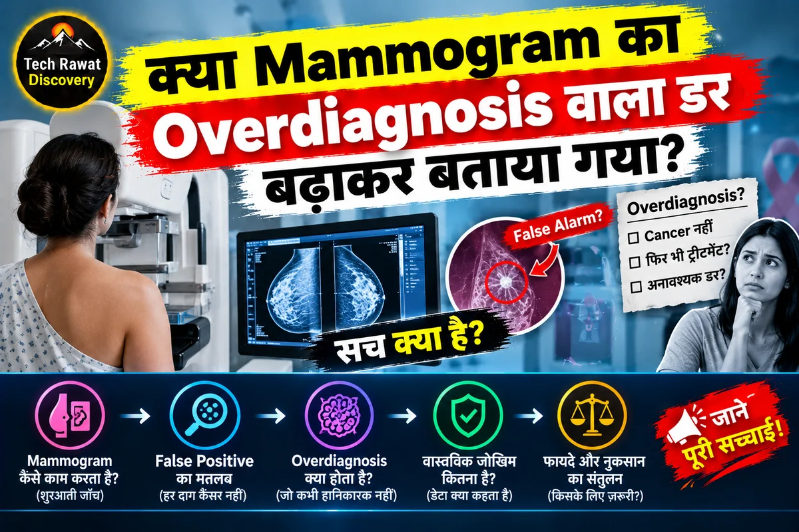
Mammogram से गलत डर फैलाया गया? नए आंकड़े कुछ और कहते हैं
पहले कुछ अध्ययनों में 30-50% breast cancer को overdiagnosis बताया गया था। JNCI के नए विश्लेषण के अनुसार यह 5% से कम हो सकता है। जानिए तरीका, सीमाएं और भारत का मतलब।
पूरा लेख पढ़ें →नकली AI आवाज़ से Bank को लगा €95 मिलियन का चूना — भारत के लिए चेतावनी
Reuters के सूत्रों के अनुसार AI से नकली आवाज़ बनाकर Italy के Fideuram से €95 मिलियन ठगे गए। आधा पैसा लौटा, भारत के लिए SEBI की चेतावनी भी जुड़ी है।
पूरा लेख पढ़ें →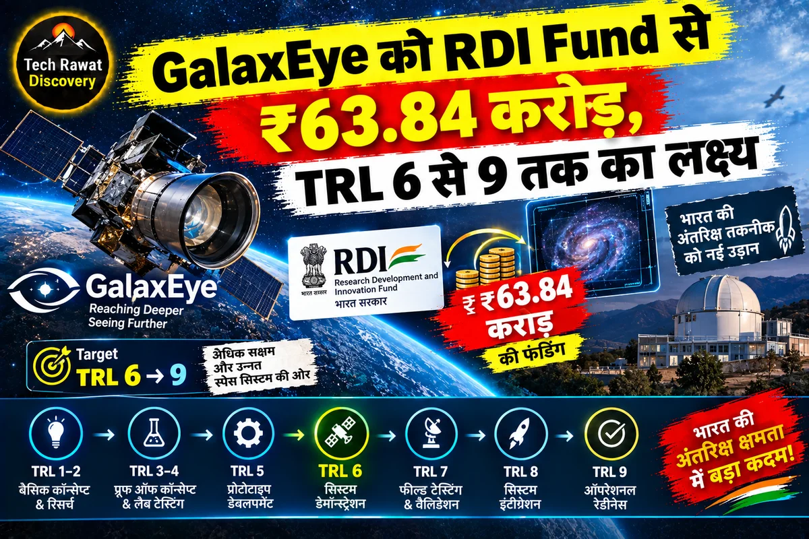
GalaxEye को मिले ₹64 करोड़ — भारतीय Satellite तकनीक की अगली छलांग
GalaxEye को TDB से RDI Fund के तहत ₹63.84 करोड़ मिले हैं। ₹247.69 करोड़ के प्रोजेक्ट का लक्ष्य OptoSAR सैटेलाइट को TRL 6 से TRL 9 तक ले जाना है।
पूरा लेख पढ़ें →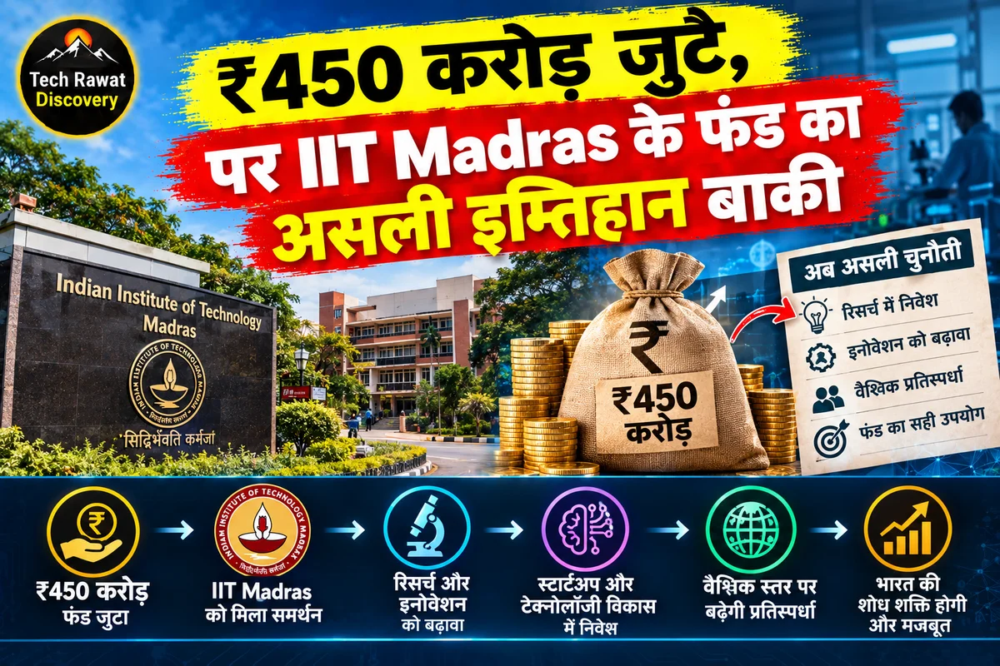
₹450 करोड़ जुट गए, पर IIT Madras के Fund की असली परीक्षा अभी बाकी
IIT Madras और Unicorn India Ventures के IITM Unicorn Frontier Fund ने ₹450 करोड़ का पहला क्लोज़ किया, पर सामान्य VC और इस patient-capital मॉडल में बड़ा फर्क है।
पूरा लेख पढ़ें →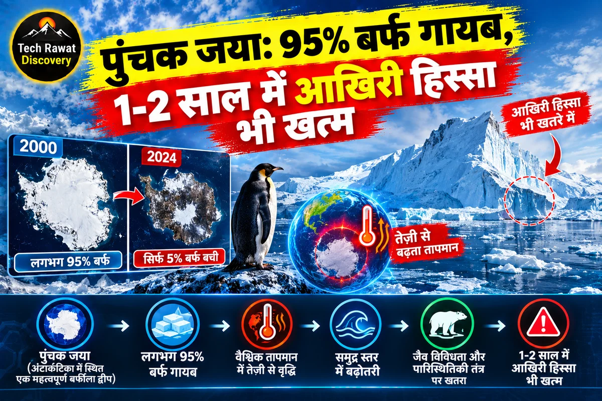
भूमध्य रेखा के पास आखिरी बर्फ भी गायब होने वाली है — 1-2 साल ही बचे
इंडोनेशिया के पापुआ में भूमध्य रेखा के पास मौजूद आखिरी उष्णकटिबंधीय बर्फ अगले एक-दो साल में गायब हो सकती है। जानें यह बर्फ अब तक कैसे टिकी रही, क्यों पिघली, और भारत के लिए इसका क्या मतलब है।
पूरा लेख पढ़ें →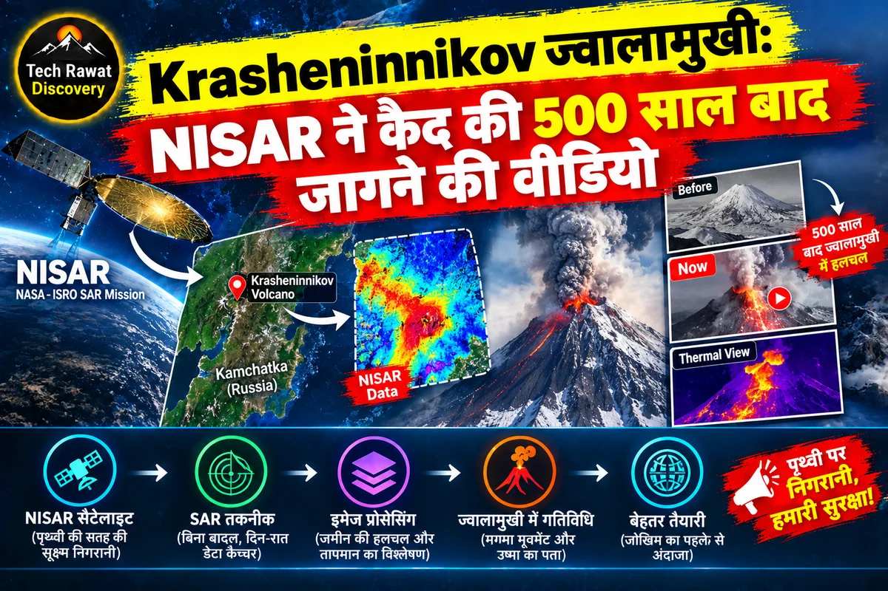
500 साल से सोया Volcano अचानक जाग गया — NISAR ने कैद किया हर पल
भारत-अमेरिका के साझा NISAR मिशन ने रूस के 500 साल से सोए Krasheninnikov ज्वालामुखी के जागने की पूरी टाइम-लैप्स वीडियो बनाई है। जानिए रडार तकनीक ने यह कैसे मुमकिन किया।
पूरा लेख पढ़ें →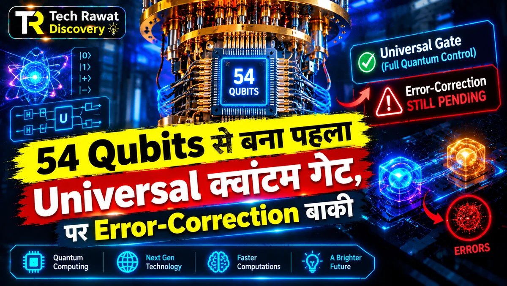
54 Qubits से बना पहला Universal Quantum Gate — पर एक चुनौती अभी बाकी
Quantinuum के H2 प्रोसेसर पर 54 qubits से non-Abelian anyons बनाकर वैज्ञानिकों ने पहली बार पूरा यूनिवर्सल क्वांटम गेट सेट दिखाया। जानिए खोज क्यों अहम है और भारत के Quantum Mission को क्या मिलेगा।
पूरा लेख पढ़ें →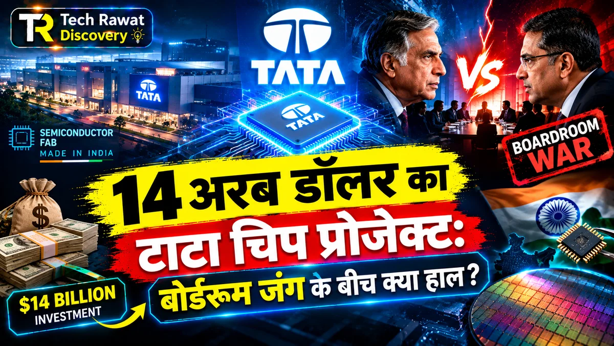
14 अरब डॉलर के टाटा चिप प्रोजेक्ट पर बोर्डरूम विवाद का साया
Tata Sons में चेयरमैन को लेकर बोर्डरूम विवाद के बीच, सरकार ने टाटा से 14 अरब डॉलर के Dholera चिप फैब पर पुष्टि ली है। जानिए प्रोजेक्ट की असली स्थिति और भारत के लिए मायने।
पूरा लेख पढ़ें →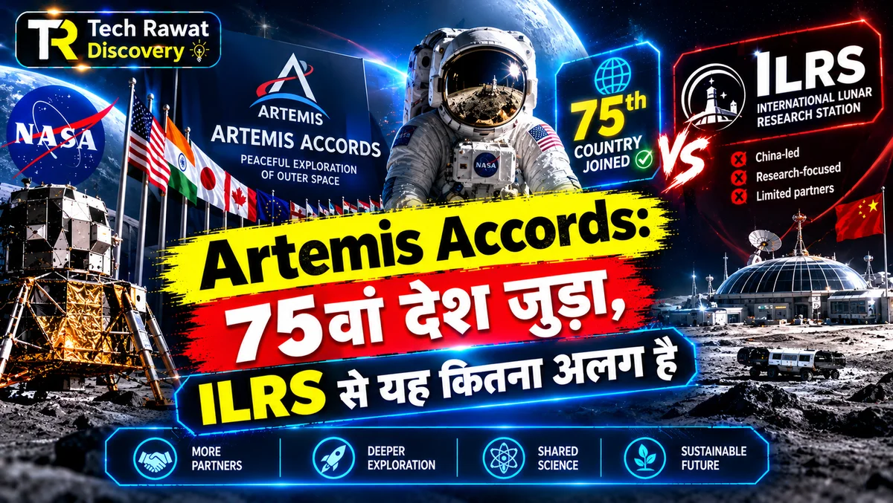
Artemis Accords में 75वां देश जुड़ा — चीन-रूस के गुट से यह कितना अलग?
24 सितंबर 2026 को कोत दिव्वार Artemis Accords का 75वां सदस्य बना। जानिए यह चीन-रूस के ILRS प्रोग्राम से कितना अलग है, और भारत व पाकिस्तान ने किस गुट को चुना।
पूरा लेख पढ़ें →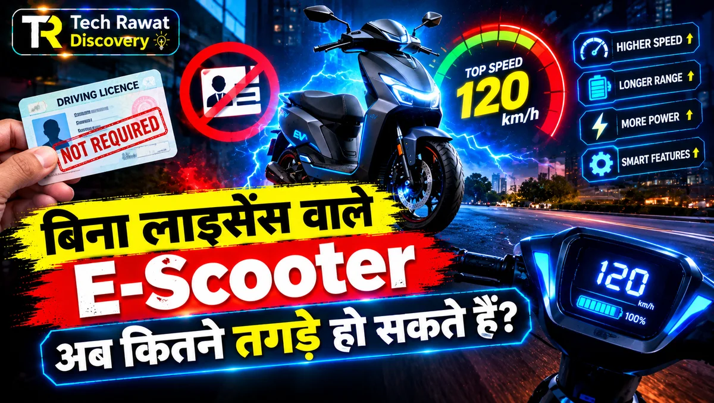
बिना License वाले E-Scooter अब कितने तेज़ दौड़ सकेंगे? नया नियम आ रहा
MoRTH ने बिना लाइसेंस-रजिस्ट्रेशन वाले low-speed EV की मोटर पावर सीमा 250W से 600W करने और वजन सीमा हटाने का मसौदा जारी किया है। जानिए यह बदलाव कैसे काम करेगा और Yulu-BGauss में असहमति क्यों है।
पूरा लेख पढ़ें →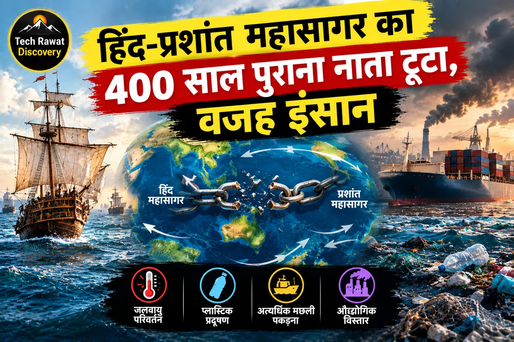
400 साल से जुड़े दो महासागरों का रिश्ता टूट गया — वजह है इंसान खुद
WHOI की नई स्टडी के मुताबिक हिंद और प्रशांत महासागर 400 साल तक जुड़े रहने के बाद अब अलग व्यवहार कर रहे हैं, इस बार वजह ज्वालामुखी नहीं इंसानी उत्सर्जन है। भारत के मानसून के लिए इसका मतलब जानें।
पूरा लेख पढ़ें →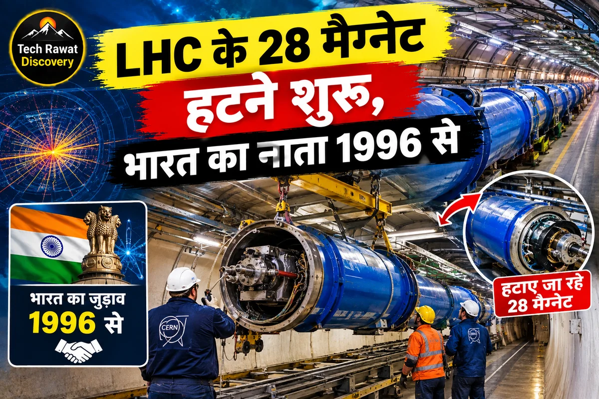
दुनिया की सबसे बड़ी Machine के 28 मैग्नेट हटने लगे — भारत का पुराना नाता
CERN ने अपने LHC के 28 सबसे अहम मैग्नेट हटाना शुरू कर दिया है। जानिए HiLumi LHC अपग्रेड में क्या बदलेगा, और 1996 से चला आ रहा भारत का इस मशीन से नाता आज कहां खड़ा है।
पूरा लेख पढ़ें →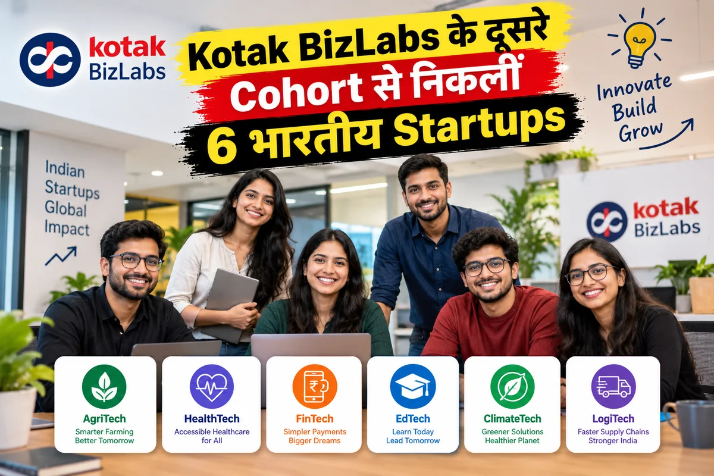
IIT Delhi के Accelerator से निकलीं 6 दमदार भारतीय Startups
Kotak BizLabs और FITT-IIT Delhi के accelerator से निकलीं 6 भारतीय स्टार्टअप्स की कहानियां, रेलवे सुरक्षा से लेकर रक्षा तकनीक और बिना पानी की रंगाई तक।
पूरा लेख पढ़ें →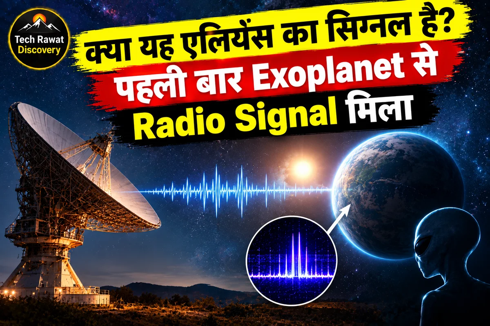
किसी Exoplanet से पहली बार Radio Signal मिला — क्या यह Alien का इशारा है?
MeerKAT टेलीस्कोप ने पहली बार सीधे किसी एक्सोप्लैनेट Beta Pictoris b से रेडियो सिग्नल पकड़े हैं। यह एलियन का संदेश नहीं, बल्कि ऑरोरा जैसी प्राकृतिक घटना है। जानिए पूरी खोज।
पूरा लेख पढ़ें →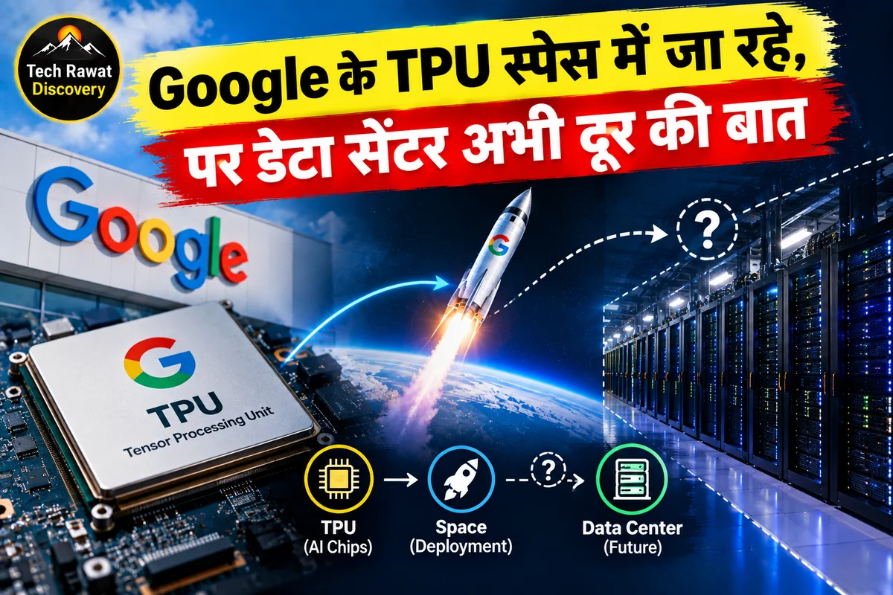
Google अपने AI Chips को Space में भेज रहा है — पूरी सच्चाई क्या है?
Google 1 अक्टूबर 2026 को सिर्फ 4 TPU वाला टेस्ट सैटेलाइट भेज रहा है, पूरा ऑर्बिटल डेटा सेंटर अभी सिर्फ योजना है। जानिए Project Suncatcher की असली स्थिति और भारत के Pathfinder मिशन से तुलना।
पूरा लेख पढ़ें →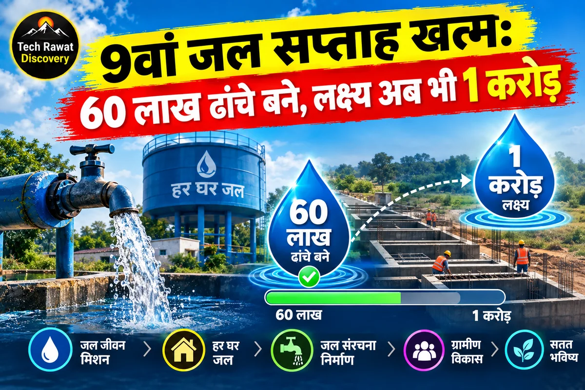
60 लाख जल-संरचनाएं बन गईं, फिर भी 1 करोड़ का लक्ष्य अभी दूर
भारत का 9वां India International Water Week 25 सितंबर 2026 को दिल्ली में खत्म हुआ। जल संचय जन भागीदारी अभियान में 60 लाख संरचनाएं बनीं, पर लक्ष्य 1 करोड़ का है। पूरा हिसाब पढ़ें।
पूरा लेख पढ़ें →